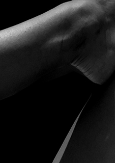
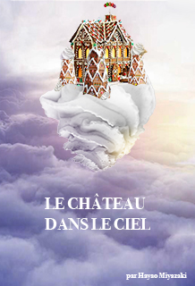
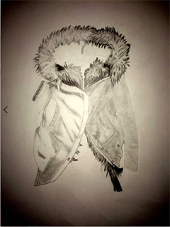

Photographie
J'ai decouvert la photographie en deuxieme annee de design, mon portfolio s'intitule "les differentes parties du corps en macro". C'etait interessant de decouvrir comment le corp pouvait reveler des ombres et lumieres differentes jusqu'a devenir quelque chose de nouveau.
Read More

Illustration
L'illustration permet de s'exprimer à l'aide de differentes techniques apprise, il y a generalement peu de contraintes et c'est ce qui rend nos realisations diverses et interessantes. Seule l'imagination compte ici.
Read More

Dessin
J'ai appris le dessin en Manaa, avec differentes techniques. Un peu difficile au depart, j'ai reussi a trouve une technique qui me ressemblais et je me suis rapidement epanouis dans le fusain.
Read More